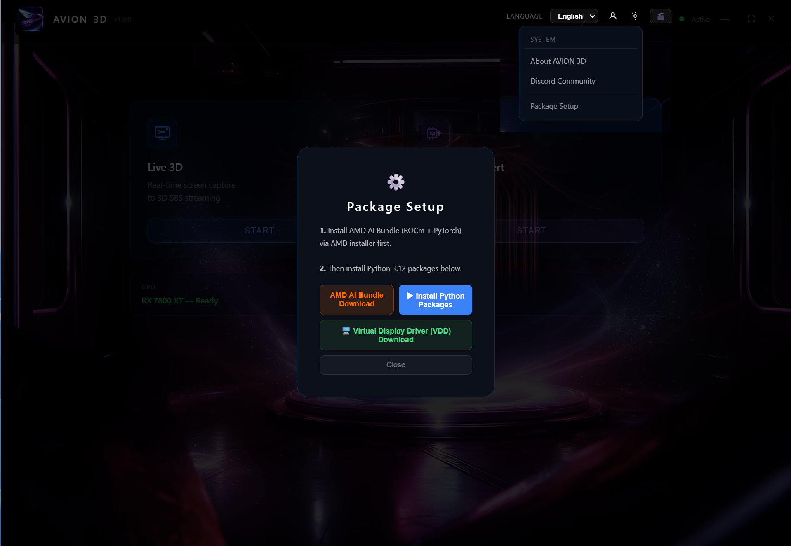

GPU 요구사항GPU Requirements
AMD RX 6000 / 7000 시리즈
또는 NVIDIA RTX 3060 이상AMD RX 6000/7000 series
or NVIDIA RTX 3060+
VR 헤드셋 (스트리밍)VR Headset (Streaming)
Meta Quest 3, Samsung Galaxy XR 또는 기타 VR/AR 기기 + Virtual Desktop 앱Meta Quest 3, Samsung Galaxy XR or other VR/AR + Virtual Desktop app
- 다운로드 버튼을 클릭해 설치 파일을 받으세요.Click the Download button to get the installer.
- AVION 3D Setup.exe 실행 → 설치 완료까지 기다리세요.Run AVION 3D Setup.exe and wait for installation to complete.
- 첫 실행 시 필요한 AI 모델이 자동으로 다운로드됩니다. (약 1~2분 소요)On first launch, AI models download automatically (approx. 1–2 min).
- 라이선스 키가 있다면 설정 → 계정에서 입력해 활성화하세요.If you have a license key, go to Settings → Account to activate it.
무료 체험: 라이선스 없이도 스트리밍 3회 × 10분, 영상 변환 3분을 무료로 체험할 수 있습니다.Free Trial: Without a license, you get 3×10min streaming and 3min video conversion for free.
실시간 3D 스트리밍Live 3D Streaming
게임, 영화, 데스크탑 화면을 실시간으로 3D SBS로 변환해 VR 헤드셋에서 바로 감상합니다.Convert games, movies, and desktop to 3D SBS in real time and watch in your VR headset.
3D 영상 파일 변환3D Video File Conversion
MKV, MP4 등 영상 파일을 Half SBS 3D로 영구 변환합니다. 애니, 영화를 3D 컬렉션으로 만드세요.Permanently convert MKV, MP4 to Half SBS 3D. Build your anime and movie 3D collection.
- PC에서 AVION 3D 실행 → 실시간 3D 선택Launch AVION 3D on PC → select Live 3D
- 원하는 설정(깊이, 해상도, FPS) 조절 후 ▶ 시작 클릭Adjust settings (depth, resolution, FPS) then click ▶ Start
- 메인 모니터의 실시간 3D 화면을 2번째 모니터로 옮겨주세요. Virtual Desktop에서 보는 화면은 2번째 모니터를 통해 시청해야 합니다.Move the Live 3D window from your main monitor to your 2nd monitor. Virtual Desktop streams from the 2nd monitor.
- VR 헤드셋을 착용하고 Virtual Desktop 앱 실행Put on your VR headset and launch the Virtual Desktop app
- Virtual Desktop에서 PC 화면 스트리밍 → AVION 3D 화면이 3D로 보입니다In Virtual Desktop, start PC streaming → AVION 3D appears in 3D
- Virtual Desktop이 연결된 화면에서 AVION 3D 창으로 전환해서 보세요. 전환 버튼은 Virtual Desktop 접속 후 하단 메뉴를 누르면 나옵니다.Switch to the AVION 3D window in Virtual Desktop. Tap the bottom menu inside Virtual Desktop to find the window switch button.
- 준비가 되셨다면 메인 모니터에서 영화, 애니메이션을 실행하세요. VR 헤드셋에서 3D로 시청하실 수 있습니다! 🎉You're all set! Play a movie or anime on your main monitor and enjoy it in 3D on your VR headset! 🎉
Virtual Desktop은 Meta Quest / Galaxy XR 스토어에서 별도 구매가 필요합니다. 무료로 사용하시려면 Bigscreen을 이용하셔도 좋습니다.Virtual Desktop requires a separate purchase from the Meta Quest / Galaxy XR store. For a free option, try Bigscreen.



- 3D 영상 변환 선택 → 파일 선택으로 영상 파일을 불러오세요 (MKV, MP4 지원)Select 3D Video Convert → click Select File to load your video (MKV, MP4 supported)
- 출력 폴더를 선택하세요. 변환된 파일이 저장될 위치입니다.Choose an output folder where the converted file will be saved.
- AI 모델, 3D 깊이 등 원하는 설정 후 ▶ 시작 클릭Configure AI model, 3D depth and other settings, then click ▶ Start
- 변환 완료 후 출력 폴더가 자동으로 열립니다.The output folder opens automatically when conversion is complete.
- 변환된 파일을 VR 헤드셋으로 재생하면 3D 입체감을 경험할 수 있습니다.Play the converted file on your VR headset to experience full 3D depth.
Depth Map 미리보기: 변환 전 🔍 Depth 버튼으로 AI가 인식하는 깊이감을 미리 확인할 수 있습니다.Depth Map Preview: Click the 🔍 Depth button before converting to preview the AI depth estimation.